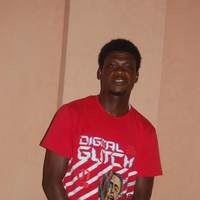

Target Audience
Who: Business owners, Business stake holders, Business owners With strong desire and prospect of building and groeing their business.
Age: 18-100
Technology: Customer relationship management (CRM) software, Location based tools, Business Email, cloud storage
Motivation: Encourage and spur business owners and partners to build their business and firms no matter the obstacles.
Personas
Samuel Jackson
- Occupation: Data Analyst
- Demographics and Education: 36 years old. Married, Father of one child, Has N.D in computer engineering
- Goals and Motivation: Learn more about Echamber, have a knowledge of what's it's all about and partner with the commerce to foster his business.
- Social: Enjoys teaching, loves spending ime with his family. Very active and optimistic individual.
- Technology: He mostly uses his laptop computer, and his Samsung Ipad. He is connected via phone and sms at home. Extensively, he uses Email and the web at work.
- Quote: "It is in our efforts, not just the thinking that we achieve our goals."
Mary Smith
- Occupation: Client Server Specialist
- Demographics and Education: 26 Years old. Single, Works at KodeHauz solution planet Holds an H.N.D in accounting
- Goals and Motivation: She is goal oriented with a strong leadership role. One of her goals is knowing more about Echamber and fostering her business.
- Social: Likes making friends and traveling. Enjoys spending time with her family.
- Technology: She is comfortable using desktop computers for her works. Also uses her HP laptop for lighter works. Uses Microsoft office for business activities, presentations, and spreadsheets.
- Quote: "That which we persist doing becomes easier for us to do."
Scenarios
- Why is Echamber important to me and my organization?
- Would there be an application process that I will follow to partner with Echamber?
- Are there samples of where similar chambers like Echamber has been successfully implemented?
- What are some of the design principles of Echamber?
- How would Echamber assist in businesses with marketing?